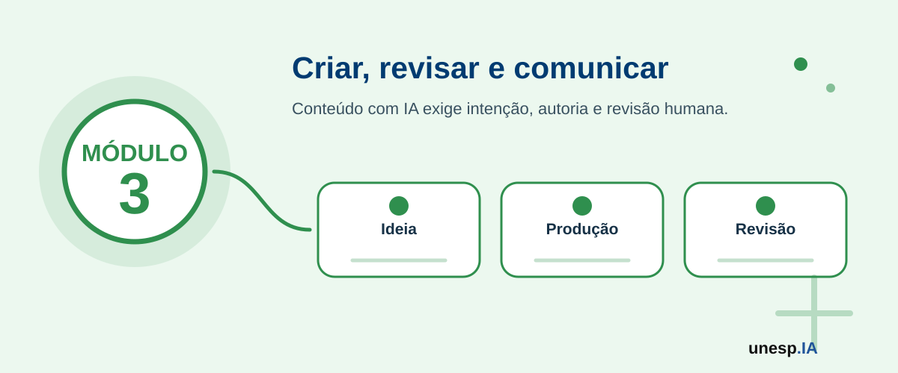

Produção de Conteúdos com Inteligência Artificial
Ferramentas relacionadas neste módulo

Apresentação
A Inteligência Artificial pode apoiar a criação de diferentes tipos de conteúdos digitais, como textos, imagens, apresentações, roteiros, vídeos, áudios, posts para redes sociais, materiais didáticos, cartazes, convites, comunicados e peças de divulgação.
No Módulo 2, o participante aprendeu a utilizar ferramentas de IA para estudo, trabalho, organização pessoal, pesquisa, documentos e cidadania digital. O Módulo 3 avança para a produção criativa, mostrando como a IA pode ser utilizada para transformar ideias em conteúdos mais claros, atrativos, organizados e adequados a diferentes públicos.
O objetivo não é substituir a criatividade humana, mas ampliar as possibilidades de criação. A IA pode sugerir ideias, organizar textos, gerar imagens, criar roteiros e apoiar o design de materiais. No entanto, cabe ao participante revisar, adaptar, validar, selecionar e assumir responsabilidade pelo conteúdo final.
Este módulo valoriza a criatividade, a comunicação, a autoria responsável, a ética, a acessibilidade e o uso crítico das ferramentas digitais.
1. Organização do Módulo
Carga horária total
12 horas.
Público recomendado
Cidadãos em geral, jovens, adultos, idosos, trabalhadores, estudantes, professores, empreendedores, servidores públicos, comunicadores e participantes interessados em criar conteúdos digitais com apoio de Inteligência Artificial.
Objetivo geral
Capacitar os participantes para produzir conteúdos digitais com apoio de ferramentas de Inteligência Artificial, incluindo textos, imagens, apresentações, roteiros, vídeos, áudios e materiais de comunicação, com atenção à clareza, criatividade, acessibilidade, ética, autoria, privacidade e adequação ao público-alvo.
Competências desenvolvidas
Ao final do módulo, espera-se que o participante seja capaz de:
- utilizar IA para gerar ideias criativas;
- produzir textos com apoio de IA;
- revisar, adaptar e melhorar conteúdos escritos;
- criar prompts (instruções para a IA) para geração de imagens;
- produzir cartazes, convites, banners e materiais visuais;
- organizar apresentações com apoio de IA;
- criar roteiros para vídeos curtos, aulas, tutoriais ou divulgações;
- utilizar IA para apoiar produção de áudio e vídeo;
- adaptar conteúdos para diferentes públicos;
- reconhecer limites, riscos e responsabilidades na criação com IA;
- respeitar autoria, direitos de imagem, privacidade e uso ético;
- produzir um portfólio digital criativo com conteúdos gerados e revisados com apoio de IA.
2. Estrutura das Unidades
| Unidade | Tema | Carga horária |
|---|---|---|
| Unidade 3.1 | Criatividade, comunicação e produção de conteúdos com IA | 2h |
| Unidade 3.2 | Produção de textos com IA | 2h |
| Unidade 3.3 | Produção de imagens, cartazes e infográficos com IA | 2h |
| Unidade 3.4 | Produção de apresentações com IA | 2h |
| Unidade 3.5 | Produção de roteiros, áudio e vídeo com IA | 2h |
| Unidade 3.6 | Laboratório criativo e portfólio digital | 2h |
| Total | 12h |
A sequência pedagógica segue a lógica:
ideia → texto → imagem → apresentação → áudio/vídeo → portfólio final
Unidade 3.1 – Criatividade, comunicação e produção de conteúdos com IA
Carga horária
2 horas
Objetivo da unidade
Apresentar o papel da IA na criatividade digital, mostrando como ela pode apoiar a geração de ideias, a organização da comunicação e a produção de conteúdos para diferentes finalidades.
Situação de abertura
Dona Maria quer criar um convite para uma atividade comunitária.
João precisa preparar uma apresentação escolar.
Ana quer divulgar um pequeno evento nas redes sociais.
Carlos deseja criar uma campanha para sua loja.
Uma professora precisa transformar um conteúdo difícil em uma explicação mais visual.
Um servidor público quer produzir um comunicado simples para a população.
Todos têm uma ideia inicial, mas nem sempre sabem como transformar essa ideia em um conteúdo claro, bonito e adequado ao público. A IA pode ajudar nesse processo.
Conceitos principais
Produzir conteúdo com IA significa utilizar ferramentas inteligentes para apoiar a criação de textos, imagens, apresentações, roteiros, vídeos, áudios e materiais digitais.
A IA pode ajudar em várias etapas:
- gerar ideias iniciais;
- organizar informações;
- sugerir títulos;
- adaptar linguagem;
- criar textos;
- propor imagens;
- estruturar apresentações;
- criar roteiros;
- sugerir formatos de divulgação;
- revisar clareza e coerência.
No entanto, a produção final exige decisão humana. O participante deve revisar, corrigir, adaptar e verificar o conteúdo antes de publicar ou compartilhar.
Criatividade humana e IA
A criatividade humana envolve experiência, intenção, emoção, cultura, contexto e sensibilidade. A IA pode sugerir combinações, formatos, textos e imagens, mas não conhece profundamente a realidade, os valores e os objetivos do participante.
Por isso, a IA deve ser usada como parceira criativa, e não como autora única do material.
Etapas da criação com IA
Etapa 1 – Definir objetivo
Antes de usar IA, é importante saber o que se deseja produzir.
Exemplos:
- informar;
- divulgar;
- ensinar;
- convidar;
- explicar;
- vender;
- orientar;
- sensibilizar.
Etapa 2 – Definir público
O conteúdo deve ser adequado ao público.
Exemplos:
- crianças;
- jovens;
- idosos;
- cidadãos em geral;
- clientes;
- alunos;
- servidores públicos;
- professores;
- empreendedores.
Etapa 3 – Definir formato
O conteúdo pode assumir diferentes formatos:
- texto curto;
- post;
- cartaz;
- convite;
- apresentação;
- roteiro;
- vídeo;
- áudio;
- infográfico;
- material didático.
Etapa 4 – Criar com apoio da IA
A IA pode gerar uma primeira versão, sugerir alternativas ou organizar ideias.
Etapa 5 – Revisar e adaptar
O participante deve revisar linguagem, informações, imagens, tom, clareza, ética e adequação ao público.
Um mesmo tema pode virar diferentes conteúdos.
Tema: uso seguro da IA.
Pode ser transformado em:
- texto explicativo;
- cartaz com dicas;
- apresentação curta;
- roteiro de vídeo;
- quiz (questionário);
- infográfico;
- post para redes sociais.
Nem todo conteúdo bonito é correto. Nem todo texto bem escrito é verdadeiro. Nem toda imagem gerada por IA é adequada. A produção com IA exige revisão crítica.
Escolha um tema de interesse e responda:
- Qual é o objetivo do conteúdo?
- Quem é o público?
- Qual formato será usado?
- Qual ferramenta pode ajudar?
- Que cuidado ético deve ser considerado?
Atividade guiada – Da ideia ao conteúdo
Objetivo
Transformar uma ideia inicial em proposta de conteúdo com apoio de IA.
Passo a passo
- Escolher um tema simples.
- Definir o público-alvo.
- Definir o objetivo da comunicação.
- Escolher o formato do conteúdo.
- Pedir à IA três ideias de abordagem.
- Selecionar a melhor ideia.
- Ajustar a ideia para o contexto real.
- Registrar a proposta.
Modelo de prompt (instrução para a IA)
Quero criar um conteúdo sobre [tema] para [público]. O objetivo é [informar/divulgar/ensinar/orientar]. Sugira três formatos de conteúdo e explique qual seria mais adequado.
Produto da unidade
Plano inicial de conteúdo com tema, público, objetivo, formato e ideia central.
A IA pode sugerir muitas ideias, mas quem deve escolher quais ideias fazem sentido para o público e para o contexto?
Unidade 3.2 – Produção de textos com IA
Carga horária
2 horas
Objetivo da unidade
Capacitar os participantes para utilizar IA na criação, revisão, adaptação e melhoria de textos para diferentes finalidades, públicos e contextos.
Situação de abertura
Dona Helena precisa escrever uma mensagem educada para solicitar uma informação.
João quer criar um pequeno texto para apresentar um trabalho.
Ana precisa elaborar uma legenda para divulgar uma oficina.
Carlos quer descrever um produto para vender melhor.
Uma professora deseja criar uma explicação simples sobre um conteúdo escolar.
Um servidor público precisa transformar um texto técnico em linguagem acessível.
A IA pode ajudar a escrever uma primeira versão, mas a revisão humana é essencial.
Conceitos principais
A produção de textos com IA envolve o uso de ferramentas generativas para criar, reescrever, resumir, revisar, adaptar ou organizar conteúdos escritos.
A IA pode ajudar em:
- criação de títulos;
- escrita de textos curtos;
- revisão gramatical;
- adaptação de linguagem;
- criação de legendas;
- elaboração de convites;
- resumos;
- roteiros;
- comunicados;
- explicações didáticas;
- descrições de produtos;
- posts para redes sociais.
Tipos de textos que podem ser produzidos
Textos informativos
Servem para explicar ou apresentar uma informação.
Exemplo: “O que é Inteligência Artificial?”
Textos de divulgação
Servem para chamar atenção para uma atividade, evento, produto ou serviço.
Exemplo: convite para oficina ou campanha.
Textos educativos
Servem para ensinar algo.
Exemplo: explicação simples sobre segurança digital.
Textos profissionais
Servem para comunicação no trabalho.
Exemplo: e-mail, comunicado, relatório curto.
Textos para redes sociais
Servem para comunicação rápida, com linguagem direta e atrativa.
Exemplo: legenda para Instagram ou Facebook.
Estrutura de um bom prompt para texto
Um bom prompt para texto deve informar:
- tema;
- objetivo;
- público;
- formato;
- tamanho;
- tom;
- cuidados.
Exemplo de prompt
Crie um texto curto sobre segurança digital para idosos. O objetivo é alertar sobre golpes no WhatsApp. Use linguagem simples, tom acolhedor e liste três cuidados principais.
Exemplos de prompts por finalidade
Convite
Crie um convite curto para uma oficina gratuita sobre Inteligência Artificial para a comunidade, com linguagem simples e acolhedora.
Legenda para redes sociais
Crie uma legenda para divulgar uma oficina de IA para iniciantes, destacando que não é necessário saber programação.
Texto educativo
Explique o que é fake news (notícias falsas) em linguagem simples, com dois exemplos e três dicas de cuidado.
Texto profissional
Escreva uma mensagem educada solicitando confirmação de presença em uma reunião.
Reescrita
Reescreva este texto com linguagem mais simples e direta: [colar texto].
Resumo
Resuma este texto em cinco tópicos principais: [colar texto].
Um pequeno comerciante pode usar IA para criar descrições de produtos.
Um professor pode usar IA para criar explicações em diferentes níveis.
Um cidadão pode usar IA para escrever uma solicitação formal.
Uma prefeitura pode usar IA para transformar uma linguagem técnica em linguagem cidadã.
A IA pode sugerir frases muito genéricas, exageradas ou inadequadas. Revise sempre:
- informação;
- tom;
- público;
- clareza;
- dados pessoais;
- direitos autorais;
- linguagem discriminatória;
- promessas exageradas.
Peça à IA para criar três versões de um mesmo texto:
- versão formal;
- versão simples;
- versão para redes sociais.
Depois compare qual versão é mais adequada ao público desejado.
Atividade guiada – Texto autoral com apoio de IA
Objetivo
Produzir um texto curto com apoio de IA, revisando e adaptando o resultado.
Passo a passo
- Escolher um tema.
- Definir o público-alvo.
- Definir o formato do texto.
- Criar um prompt completo.
- Gerar a primeira versão.
- Pedir uma versão mais simples ou mais adequada.
- Revisar o conteúdo.
- Ajustar com palavras próprias.
- Verificar se há informações incorretas ou exageradas.
- Salvar a versão final.
Produto da unidade
Texto autoral produzido e revisado com apoio de IA.
Quando usamos IA para escrever, o texto final é responsabilidade da ferramenta ou de quem publica?
Unidade 3.3 – Produção de imagens, cartazes e infográficos com IA
Carga horária
2 horas
Objetivo da unidade
Capacitar os participantes para criar imagens, cartazes, convites, banners e infográficos com apoio de IA, considerando objetivo, público, composição visual, clareza, acessibilidade e ética.
Situação de abertura
Dona Maria quer criar um cartaz para divulgar uma atividade no bairro.
João precisa ilustrar uma apresentação.
Ana quer criar uma imagem para redes sociais.
Carlos precisa divulgar uma promoção.
Uma professora deseja criar um infográfico para explicar um conteúdo.
Um servidor público precisa produzir um comunicado visual simples.
A IA pode ajudar na criação visual, mas é preciso orientar bem a ferramenta e revisar o resultado.
Conceitos principais
A produção de imagens com IA pode ocorrer de duas formas principais:
- Geração de imagem a partir de texto.
- Criação ou edição de materiais visuais em plataformas como Canva.
Na geração por texto, o participante descreve a imagem desejada. Essa descrição é chamada de prompt visual.
Um bom prompt visual deve informar:
- tema;
- estilo;
- elementos principais;
- público;
- ambiente;
- cores desejadas;
- formato;
- objetivo;
- restrições.
Exemplos de conteúdos visuais
- cartaz;
- convite;
- banner;
- capa de apresentação;
- imagem para redes sociais;
- infográfico;
- ilustração;
- personagem;
- diagrama;
- card informativo.
Estrutura de um prompt visual
Um bom prompt visual pode seguir a fórmula:
Tema + Elementos + Estilo + Público + Ambiente + Formato + Cuidados
Exemplo de prompt visual
Crie uma imagem para divulgar uma oficina de Inteligência Artificial para iniciantes. A imagem deve mostrar pessoas de diferentes idades aprendendo juntas, com ambiente acolhedor, estilo moderno e educativo, cores suaves, sem textos dentro da imagem.
Cuidados com imagens geradas por IA
Antes de usar uma imagem, verifique:
- se há deformações;
- se há textos incorretos;
- se há estereótipos;
- se há uso indevido de imagem de pessoas;
- se a imagem comunica bem a ideia;
- se é adequada ao público;
- se respeita direitos e privacidade.
Uma imagem gerada por IA pode servir como ilustração inicial, mas um cartaz final precisa de revisão, organização visual e clareza textual.
Por isso, uma boa estratégia é:
- gerar imagem ou ilustração;
- inserir no Canva;
- adicionar textos claros;
- revisar contraste e leitura;
- exportar o material final.
Noções básicas de design acessível
Um material visual deve ser:
- legível;
- claro;
- organizado;
- com bom contraste;
- sem excesso de texto;
- adequado ao público;
- compreensível mesmo para quem não domina o tema.
Evite gerar imagens que imitem pessoas reais sem autorização. Também evite imagens ofensivas, discriminatórias, enganosas ou que possam ser confundidas com fatos reais.
Crie dois prompts visuais para o mesmo tema:
Compare os resultados e observe qual ficou mais próximo do esperado.
Atividade guiada – Cartaz com IA
Objetivo
Criar um cartaz ou card informativo com apoio de IA.
Passo a passo
- Escolher o tema do cartaz.
- Definir público-alvo.
- Definir objetivo da comunicação.
- Criar um prompt visual.
- Gerar ou selecionar uma imagem.
- Abrir o Canva ou Google Slides.
- Inserir título, imagem e informações principais.
- Revisar clareza, contraste e tamanho das letras.
- Verificar se não há dados incorretos ou inadequados.
- Exportar ou apresentar o cartaz.
Produto da unidade
Cartaz, card ou infográfico produzido com apoio de IA.
Uma imagem bonita é suficiente para comunicar bem uma ideia? O que torna um material visual realmente útil?
Unidade 3.4 – Produção de apresentações com IA
Carga horária
2 horas
Objetivo da unidade
Capacitar os participantes para criar apresentações simples, organizadas e visualmente claras com apoio de ferramentas de IA.
Situação de abertura
João precisa apresentar um trabalho.
Ana quer explicar uma ideia em uma reunião.
Carlos precisa apresentar seu negócio.
Uma professora quer criar slides para uma aula.
Um servidor público precisa apresentar dados de um projeto para a comunidade.
Muitas pessoas sabem o que querem falar, mas têm dificuldade para organizar as ideias em slides. A IA pode ajudar a estruturar a apresentação.
Conceitos principais
Uma apresentação não deve ser apenas um conjunto de slides cheios de texto. Ela deve organizar uma mensagem de forma clara, visual e sequencial.
A IA pode ajudar a:
- estruturar tópicos;
- sugerir roteiro;
- criar títulos;
- resumir conteúdo;
- propor exemplos;
- sugerir imagens;
- organizar fala;
- criar perguntas para interação;
- adaptar linguagem ao público.
Estrutura básica de uma apresentação
Uma apresentação simples pode conter:
- título;
- objetivo;
- contexto;
- problema ou tema;
- explicação principal;
- exemplos;
- cuidados ou recomendações;
- conclusão;
- chamada para ação ou reflexão.
Exemplo de prompt para apresentação
Crie uma estrutura de apresentação com 6 slides sobre uso seguro da Inteligência Artificial para cidadãos iniciantes. Para cada slide, indique título, tópicos principais, sugestão de imagem e fala do apresentador.
Boas práticas para slides
- usar pouco texto;
- usar títulos claros;
- destacar ideias principais;
- usar imagens coerentes;
- evitar excesso de elementos;
- manter boa legibilidade;
- usar exemplos práticos;
- adequar linguagem ao público;
- revisar informações.
Uma apresentação sobre “golpes digitais com IA” pode conter:
- título;
- situação real;
- o que são golpes digitais;
- sinais de alerta;
- como se proteger;
- conclusão e checklist.
Slides criados automaticamente podem conter informações genéricas, imagens inadequadas ou excesso de texto. Sempre revise e adapte ao público.
Peça à IA uma estrutura de apresentação sobre um tema de interesse com:
- 5 slides;
- título de cada slide;
- tópicos principais;
- sugestão de imagem;
- fala curta do apresentador.
Atividade guiada – Minha apresentação com IA
Objetivo
Criar uma apresentação curta com apoio de IA.
Passo a passo
- Escolher um tema.
- Definir público e objetivo.
- Pedir à IA uma estrutura de 5 a 6 slides.
- Revisar a sequência sugerida.
- Criar os slides no Google Slides ou Canva.
- Inserir textos curtos e imagens adequadas.
- Revisar legibilidade e clareza.
- Preparar uma fala curta.
- Apresentar para a turma ou grupo.
Produto da unidade
Apresentação curta produzida com apoio de IA.
Uma boa apresentação depende mais dos slides ou da clareza da mensagem que queremos transmitir?
Unidade 3.5 – Produção de roteiros, áudio e vídeo com IA
Carga horária
2 horas
Objetivo da unidade
Capacitar os participantes para criar roteiros, narrações, vídeos curtos e conteúdos audiovisuais com apoio de IA, considerando clareza, ética, acessibilidade e adequação ao público.
Situação de abertura
Ana quer criar um vídeo curto para divulgar uma oficina.
Carlos quer explicar um produto em um vídeo simples.
Uma professora quer criar um roteiro de vídeo educativo.
Um servidor público deseja gravar uma orientação para cidadãos.
Dona Maria quer transformar um texto em áudio para facilitar a escuta.
A IA pode ajudar a criar roteiros, organizar falas, gerar legendas, sugerir cenas, criar narrações e apoiar a edição.
Conceitos principais
A produção audiovisual com IA envolve o uso de ferramentas para criar ou apoiar:
- roteiros;
- falas;
- narrações;
- legendas;
- vídeos curtos;
- apresentações narradas;
- trilhas sonoras;
- cortes e edições;
- imagens de apoio.
O conteúdo audiovisual deve ser claro, curto, acessível e adequado ao público.
Tipos de vídeos que podem ser produzidos
- vídeo educativo;
- vídeo de divulgação;
- tutorial;
- orientação ao cidadão;
- apresentação de projeto;
- vídeo para redes sociais;
- vídeo institucional curto;
- vídeo com narração.
Estrutura básica de roteiro
Um roteiro simples pode ter:
- abertura;
- problema ou pergunta inicial;
- explicação principal;
- exemplo;
- orientação ou solução;
- encerramento.
Exemplo de prompt para roteiro
Crie um roteiro de vídeo de 1 minuto sobre como evitar golpes no WhatsApp. O público são idosos. Use linguagem simples, tom acolhedor, três dicas práticas e encerramento com mensagem de cuidado.
IA para áudio
A IA pode ajudar a:
- transformar texto em fala;
- criar narrações;
- adaptar linguagem oral;
- criar podcasts curtos;
- resumir textos em áudio;
- apoiar acessibilidade.
IA para vídeo
A IA pode ajudar a:
- criar roteiro;
- sugerir cenas;
- gerar legendas;
- organizar sequência;
- cortar trechos;
- criar imagens de apoio;
- criar vídeos explicativos simples.
Ferramentas possíveis
- CapCut;
- Canva Vídeo;
- Runway;
- Pika;
- ElevenLabs;
- NotebookLM;
- ChatGPT;
- Gemini;
- Copilot.
Cuidado com o uso de voz, imagem e identidade de pessoas. Não use IA para imitar vozes ou rostos sem autorização. Não crie vídeos enganosos ou que possam ser confundidos com fatos reais.
Peça à IA:
- um roteiro de vídeo de 1 minuto;
- uma versão mais curta;
- uma versão com linguagem simples;
- uma sugestão de legenda;
- uma lista de cenas possíveis.
Atividade guiada – Roteiro de vídeo curto
Objetivo
Criar um roteiro de vídeo ou áudio curto com apoio de IA.
Passo a passo
- Escolher um tema.
- Definir público-alvo.
- Definir duração do vídeo ou áudio.
- Criar um prompt para roteiro.
- Pedir versão mais simples e curta.
- Revisar conteúdo e linguagem.
- Criar legenda ou descrição.
- Opcionalmente, gravar áudio ou montar vídeo simples.
- Compartilhar com a turma.
Produto da unidade
Roteiro de vídeo, áudio curto ou vídeo simples produzido com apoio de IA.
Quando um vídeo é gerado ou editado com IA, como garantir que ele seja claro, verdadeiro e respeitoso?
Unidade 3.6 – Laboratório criativo e portfólio digital
Carga horária
2 horas
Objetivo da unidade
Integrar os conhecimentos do módulo por meio da criação de um portfólio digital com textos, imagens, apresentação e roteiro produzidos com apoio de IA.
Situação de abertura
Ao longo do módulo, os participantes criaram ideias, textos, imagens, cartazes, apresentações e roteiros. Agora, o desafio é organizar esses materiais em um portfólio simples, mostrando o processo criativo, as ferramentas utilizadas, os cuidados adotados e os resultados produzidos.
O portfólio não precisa ser complexo. Ele deve demonstrar aprendizagem, autoria, reflexão e uso responsável da IA.
Conceitos principais
Portfólio digital é uma coleção organizada de produções. Ele pode reunir textos, imagens, slides, roteiros, vídeos, áudios e reflexões sobre o processo de criação.
No contexto deste módulo, o portfólio deve mostrar não apenas o produto final, mas também como a IA foi usada como apoio.
Elementos do portfólio
O portfólio pode conter:
- tema escolhido;
- objetivo da produção;
- público-alvo;
- texto criado com IA;
- cartaz, card ou imagem;
- apresentação curta;
- roteiro de vídeo ou áudio;
- prompts utilizados;
- ajustes feitos pelo participante;
- cuidados éticos adotados;
- reflexão final.
Estrutura sugerida
- Capa do portfólio.
- Tema e objetivo.
- Público-alvo.
- Texto produzido.
- Imagem, cartaz ou infográfico.
- Apresentação.
- Roteiro de áudio ou vídeo.
- Prompts utilizados.
- Cuidados adotados.
- Reflexão final.
Um participante pode escolher o tema “segurança digital” e produzir:
- texto explicativo;
- cartaz com três dicas;
- apresentação de 5 slides;
- roteiro de vídeo de 1 minuto;
- reflexão sobre o uso da IA na criação.
Outro participante pode escolher “divulgação de um pequeno negócio” e produzir:
- descrição de produto;
- card promocional;
- roteiro para vídeo;
- apresentação curta do negócio.
O portfólio deve ser revisado antes da apresentação. Verifique:
- se as informações estão corretas;
- se não há dados pessoais expostos;
- se imagens são adequadas;
- se os textos foram revisados;
- se o conteúdo respeita o público;
- se há clareza sobre o uso da IA.
Atividade prática – Meu portfólio criativo com IA
Objetivo
Organizar as produções do módulo em um portfólio digital simples.
Passo a passo
- Escolher o tema central do portfólio.
- Reunir os produtos criados nas unidades anteriores.
- Selecionar pelo menos:
- um texto;
- uma imagem, cartaz ou infográfico;
- uma apresentação curta;
- um roteiro de áudio ou vídeo.
- Registrar os prompts usados.
- Descrever os ajustes realizados.
- Indicar cuidados éticos e de segurança.
- Organizar tudo em Google Slides, Canva, Google Docs ou pasta digital.
- Preparar uma apresentação de até três minutos.
- Compartilhar o portfólio com a turma.
Ferramentas
Canva, Google Slides, Google Docs, Google Drive, ChatGPT, Gemini, Copilot e ferramentas de imagem, áudio ou vídeo utilizadas no módulo.
Portfólio digital criativo com conteúdos produzidos com apoio de IA.
O que mudou no seu processo de criação ao usar IA como apoio? Em que momentos a sua decisão humana foi mais importante?
Avaliação do Módulo 3
A avaliação será formativa, prática e participativa.
Critérios
- participação nas discussões;
- uso adequado das ferramentas de IA;
- elaboração de prompts para textos, imagens, apresentações e roteiros;
- clareza dos conteúdos produzidos;
- adequação ao público-alvo;
- criatividade;
- revisão crítica dos resultados gerados por IA;
- cuidado com privacidade, autoria e ética;
- organização do portfólio;
- apresentação final do produto.
Produto final do módulo
Ao final do Módulo 3, o participante terá produzido:
Portfólio digital criativo com conteúdos produzidos com apoio de IA.
Esse portfólio poderá conter:
- texto autoral produzido com apoio de IA;
- cartaz, card ou infográfico;
- apresentação curta;
- roteiro de áudio ou vídeo;
- prompts utilizados;
- registros de revisão e adaptação;
- reflexão sobre uso responsável da IA.
Resultado esperado
Ao final do Módulo 3, o participante deverá ser capaz de utilizar ferramentas de IA para apoiar a criação de conteúdos digitais, revisar e adaptar resultados, produzir materiais adequados a diferentes públicos e reconhecer cuidados relacionados à ética, autoria, privacidade, imagem, voz, direitos e responsabilidade sobre o conteúdo publicado.
O participante também deverá estar preparado para avançar para o Módulo 4 – Compreendendo o Funcionamento da Inteligência Artificial.